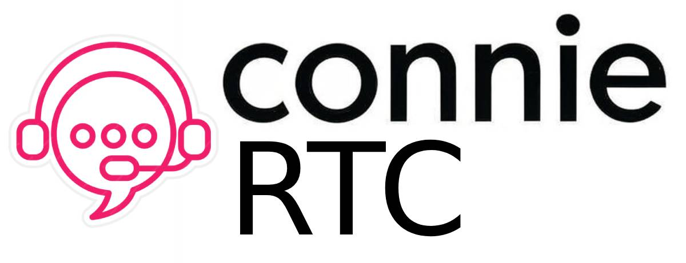

ConnieRTC Documentation

The _Connie Realtime Center (aka ConnieRTC) is a comprehensive digital communication and engagement solution that provides advanced contact center capabilities to local nonprofit organizations and other community based organizations that provide mission critical programs and services to people in-need.
Welcome to Connie! How Can We Help You Today?
Find your documentation path based on how you interact with ConnieRTC:
👥 End Users
I work at a nonprofit and use ConnieRTC daily to serve our community
Handle calls, chats, and client interactions
Monitor teams and manage schedules
Configure system and manage users
📚 Getting Started
New to ConnieRTC? Start here to understand the platform and its features
🤖 AI Agents
I'm an AI assistant helping users with ConnieRTC
🎯 Not Sure Where to Start?
- Running a nonprofit? Start with Administrators
- Taking calls/chats? You're a Staff Agent - go to Staff Agents
- New to ConnieRTC? Check out Getting Started
- You're an AI? Access AI Agent Resources
About ConnieRTC
This documentation covers all the key components and features of the ConnieRTC platform:
- Scalable Solutions: Can be used for large projects or simple standalone features
- Feature-Rich: Many of the most common features requested by ConnieRTC customers are already packaged in the template
- Modular Design: Each feature is self-contained and easily removed if desired
- Admin Control: Features can be turned on and off using an administration panel
- Quick Deployment: You can deploy this solution and use it to build in just a few minutes by providing your account SID, API key, and API secret
Why Choose ConnieRTC?
The Connie platform is a robust suite of tools that can be orchestrated together to create incredible custom solutions. The biggest challenge is how to automatically configure and orchestrate these different tools together from a single source of truth. This is the problem ConnieRTC aims to resolve.
ConnieRTC provides a comprehensive solution specifically designed for nonprofit organizations and community-based organizations that need powerful, affordable communication tools to serve their communities better.
Community & Support
- Community Forum: Join our discussions for peer support
- Professional Services: Get expert help for complex deployments
- Open Source: Contribute to the platform and help other nonprofits
Ready to get started? Choose your path above to dive into the documentation that's perfect for your role!